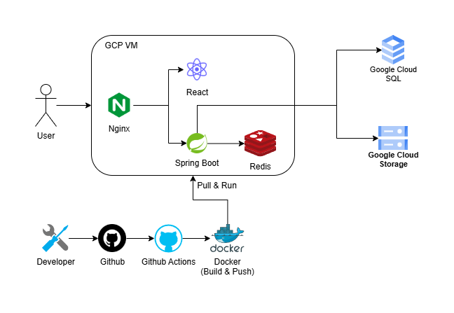
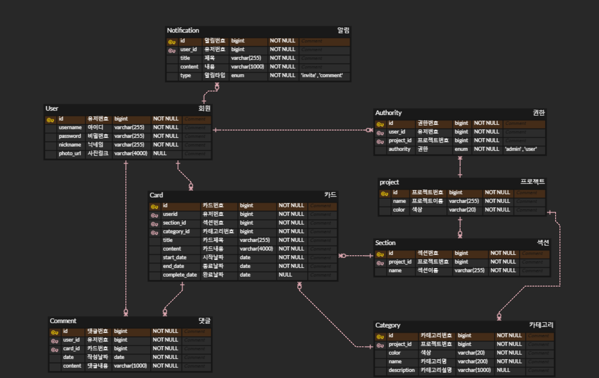

개발 환경
- Version: Java 17
- IDE: IntelliJ
- Framework: SpringBoot 3.3.0
- ORM: JPA
기술 스택
- Computing: Google Cloud VM (Compute Engine), Docker
- Frontend: React
- Database: Google Cloud SQL (MySQL)
- Cache: Redis
- Storage: Google Cloud Storage (GCS)
전체 아키텍처

GitHub Actions 기반의 CI/CD 파이프라인, Redis 캐시 계층, Google Cloud 환경을 활용한 구성으로 개발 효율성과 운영 안정성을 동시에 고려한 구조입니다.
ERD 설계

프로젝트, 컬럼, 카드, 사용자 간의 관계를 정규화 원칙에 따라 명확히 정의하고, 복합 인덱스 기반의 빠른 검색과 조회 최적화를 위해 설계되었습니다. 초대 기능과 역할 관리(Authority)를 고려한 권한 기반 구조도 설계되었습니다.
기술 선택 이유 및 주요 구현
CI/CD – GitHub Actions + Docker
- 개발 → GitHub → Actions → Docker 이미지 자동 빌드 및 VM 배포
- 서버 수동 접근 최소화, 배포 속도 향상
회원 관리 – 복합 인덱스 + QueryDSL
- 이름+이메일 기준 복합 인덱스로 검색 속도 향상
- QueryDSL을 통해 조건식 복잡도 줄이고 유지보수성 강화
로그 시스템 – AOP + 파티셔닝
- AOP 기반 자동 로깅으로 핵심 로직과 관심사 분리
- 로그 테이블을 월 단위로 파티셔닝 → 관리 및 성능 최적화
초대 기능 – Redis 기반 구조
- List 자료구조와 JSON 형식을 혼합하여 초대 상태, 시간 등을 하나의 키에 저장
- 초대코드 생성 및 만료 시간 TTL 설정으로 불필요한 데이터 정리 가능
소셜 로그인 – Kakao
- OAuth2.0 기반으로 간편 로그인 구현
- JWT + Refresh Token으로 세션 유지를 처리함으로써 보안성과 편의성 확보